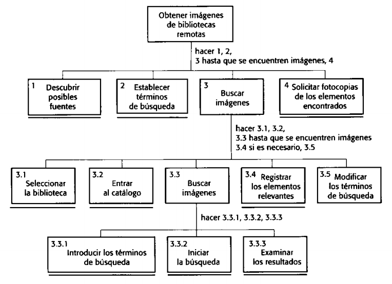

Prototipado y Proceso de Diseño
Conceptos básicos
Created by @edme88
Libros:
 “Ingeniería del software” séptima edición de Ian Sommervill
(Capítulo N°16: Diseño de Interfaces de Usuario)
“Ingeniería del software” séptima edición de Ian Sommervill
(Capítulo N°16: Diseño de Interfaces de Usuario)
“Ingeniería del Software: Un enfoque práctico 6ta ed.” de Roger Pressman
(Capítulo N°11: Diseño de la Interfaz de Usuario)
Interfaz de Usuario
Es el medio con que el usuario puede comunicarse con una máquina, equipo, computadora o dispositivo, y
comprende todos los puntos de contacto entre el usuario y el equipo.
Incluyen elementos como menús, ventanas, contenido gráfico, cursor, etc.
Proceso de Diseño de Interfaz de Usuario
Proceso iterativo donde los usuarios interactúan con los diseñadores y prototipados de la interfaz para decidir las características, organización, apariencia y funcionamiento de la interfaz de usurio del sistema.
Proceso de Diseño de Interfaz de Usuario

Proceso de Diseño de Interfaz de Usuario
Actividades para el proceso de Diseño de Interfaz de Usuario:
- Análisis del usuario
- Análisis Jerárquico de Tareas (HTA)
- Estudios Etnográficos
- Entrevistas de Usuarios
- Prototipado del sistema
- Evaluación de la Interfaz
Análisis Jerárquico de Tareas

Estudio Etnográfico
Observación de los usuarios en su contexto y dentro de su entorno, tratando de no interferir en sus acciones, usos y costumbres para determinar los requerimientos de usabilidad.
Entrevistas de Usuarios
Reunirse con los usuarios para entender mejor sus necesidades, motivaciones, cultura laboral y otros aspectos. Pueden ser reuniones individuales o a través de grupos de enfoque.
Prototipo
Un prototipo es una representación de un sistema, aunque no es un sistema completo, posee las
características del sistema final o parte de ellas.

Prototipo
Un prototipo en software es un modelo del comportamiento del sistema que puede ser usado para
entenderlo completamente o ciertos aspectos de él y así clarificar los requerimientos.

Prototipado
Ventajas:
- Permite mostrar al usuario el sistema y recibir un feedback temprano
- Método intuitivo para identificar características y requerimientos
Proceso de Prototipado de la IU
- Prototipo en papel: Maquetas de los diseños de pantalla
- Prototipo Automatizado: Permite al usuario realizar pruebas y simulación
Actividad 5
Realice un prototipo de la interfaz de usuario del sistema en papel.
Debe tener en cuenta:
- ¿Qué opciones debe ofrecer al usuario?
- ¿Qué gama de colores utilizaría?
- ¿Para qué tipo de usuarios está destinado?
- Sistemas similares.
- ¿Qué acciones le permiten al usuario realizar?
- Mensajes de Error
Evaluación de la Interfaz
Proceso de evaluar la forma en que se utiliza una interfaz y verificar que cumple los requerimientos
del
usuario.
Es parte del proceso de verificación y validación de los sistemas software.
Evaluación de la Interfaz

Actividad 6
Intercambie su diseño de interfaz con otro grupo:
- ¿Qué opciones tiene este sistema que no estén disponibles en el propio?
- ¿Es deseable introducir en un futuro rediseño del sistema estas características?
- ¿Qué ventajas y desventajas presenta el otro sistema con respecto al propio?
Presente un documento al otro equipo con el análisis realizado.
Actividad 8
Realice un rediseño del sistema teniendo en cuenta el documento de sugerencias recibido.
Emplee algún programa para maquetar de manera digital.
“Es mejor diseñar la experiencia del usuario que rectificarla.”
¿Dudas, Preguntas, Comentarios?